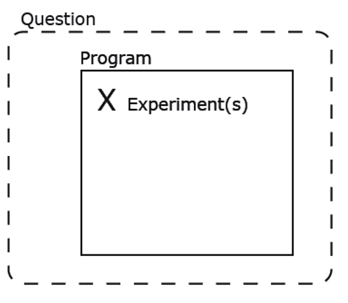
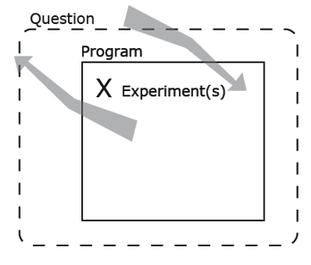
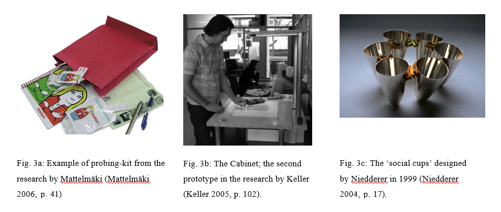
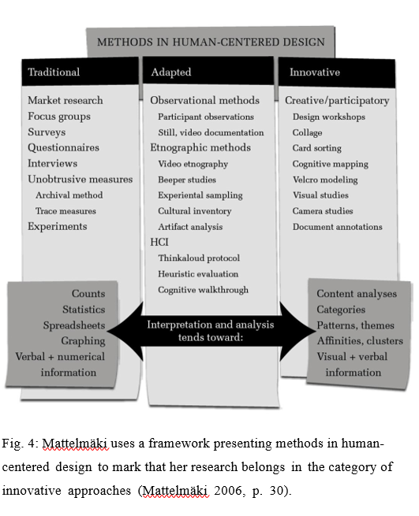
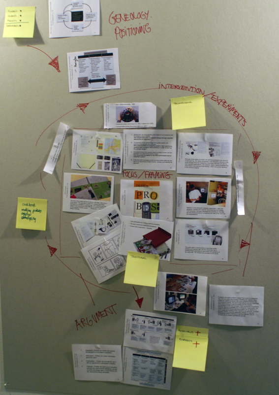
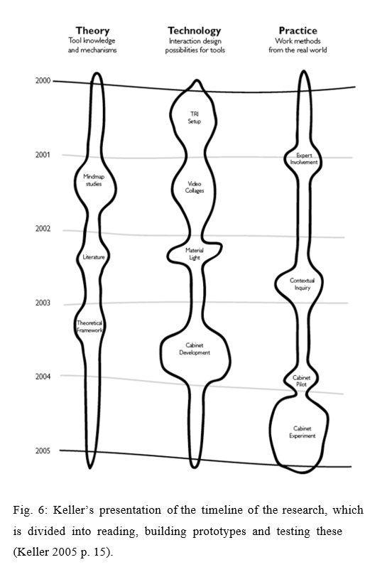
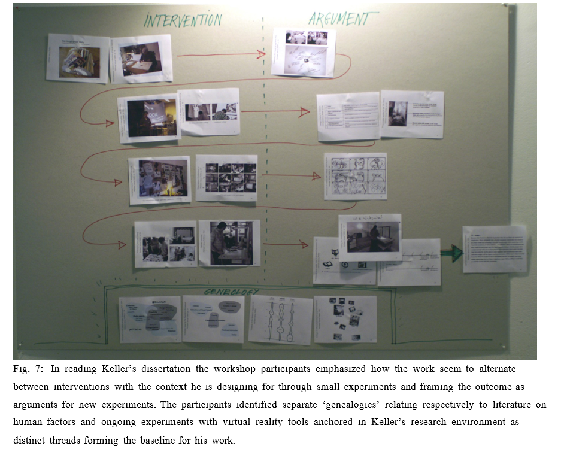
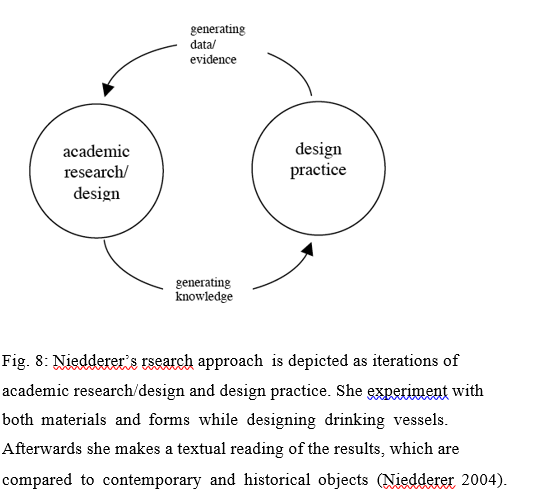
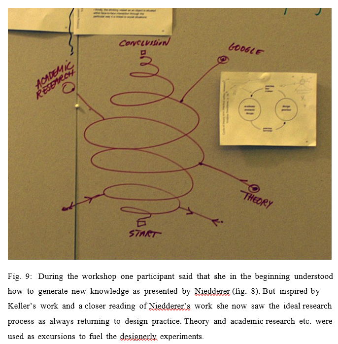
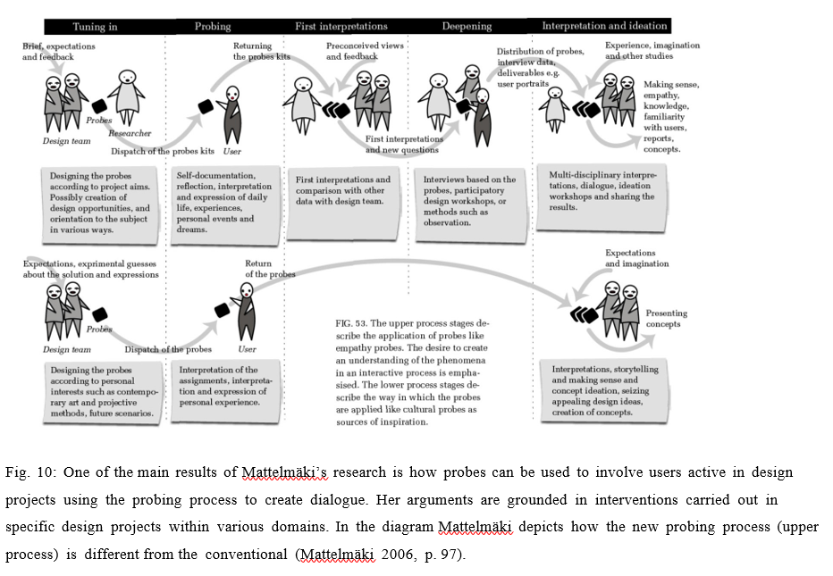

For several decades it has been discussed how knowledge and knowing in design relates to other fields particularly Science and the Humanities (see eg. Simon 1969). The design professions have been searching for a proper base for professional education and for granting professional expertise. Simultaneously other professionals have been embracing designerly ways of knowing to accommodate the open-ended inquiries of for example medical diagnosis or managerial practice to create a working alternative to the rigid knowledge claims and methods of science or the self-contained textuality of the humanities.
In the six’ties and seven’ties we had debates on a science of design (Simon 1969). Here methods and approaches from science where re-interpreted in the light of design’s orientation not towards a natural state but towards intended change. The purpose was to create a fitting suit for design that on the one hand acknowledged that design is about envisioning possible futures and on the other hand helped designers to think of the new with methods and tools that were not embedded in tradition (Jones 1992).
Later in the eighties more concern was given to what was called design studies. In the light of attempts to rationalize creative work through computer technology and automated reasoning, it became increasingly interesting to study and conceptualize the particular ways in which designers’ act and reason. These studies revealed how creative work is enacted in conversations with materials and representations that are strongly grafted by tradition and have their foundation in a professional repertoire rooted in the design communities (Schön 1987, Cuff 1992).
Since the mid-nineties we have seen an interesting and largely pragmatic shift from the labels of design science and design studies to design research encompassing a large and varied set of approaches to knowing in design. This time the impetus is not to find first principles in design reasoning, but much more to find new directions to go with design. The discussion on research on, in and through design (Frayling 1993) has inspired and challenged design researchers to position research more clearly in relation to design practice, and it has opened a venue for design research where a designerly engagement becomes a relevant vehicle for the production of knowledge. As opposed to design science and design studies, design research as a label is used both to point to a particular aspect of professional practice, as reflected for example in publications on how to conduct research in a professional design setting (Laurel 2003) and as a particular designerly mode of scholarly inquiry often called practice-based research, that accommodates artistically oriented explorations of scholarly themes (Biggs 2004). The two are not contradictory but indicates an interesting ambiguity: design practice may involve research and design research practice may involve design, without the present day discussion giving any formal or practical handles to distinguish between research in the former and the later case.
Rather than attempting to establish such a distinction we will in this paper look at design research engaging what we with a broad term call design experiments, from the pragmatic perspective suggested by Rorthy “ that scholarly research is anything our peers will let us get away with” (here quoted after Lotz 2004). We will not work by definitions but instead report and reflect upon how a diverse group of design researchers have read three recent Ph.D. dissertations originating in different parts of the present design research landscape. Our interest is not to rate the work brought forward in the dissertations (we have carefully chosen three that has already been well reviewed), but to test on what grounds we can become each other’s peers. In this inquiry we will deliberately take advantage of the ambiguities of design practice involving research, and research practice involving design to engage concepts such as program (from the design community) and experiment (from the research community) with the haunch that these concepts can be made to travel between communities (or modes of inquiry).
We are however not on a course where design becomes research or research becomes design. It is guiding for our inquiry that research must be knowledge production in a form, which is accessible and arguable among peers. We will not attempt to define what this kind of knowledge is. Instead we will assume that knowledge production in experimental design research involves a traceable genealogy, an intervention in the world and the articulation of an argument for others to engage with. We will come back to how this may help us establish our peer communities.
Design researchers are increasingly engaging their own capacities as designers in research. Some are pursuing a dual line of inquiry where a string of explorative design works is complemented by analysis conducted along the conventions laid out by other research traditions. In the following exemplified with the work of Kristina Niedderer (Niedderer 2004). Others let their research take its shape from for example technological research where completed design works are put on trial and evaluated as prototypical instances of a larger programmatic approach (Scrivener 2002). Here this approach is exemplified with the work of Adriaan Ianus Keller (Keller 2005). Yet others employ and reflect upon exemplary design processes that may become exemplars for practitioners in a way that is well known from action research (Brandt 2004). This approach is in this paper exemplified with the work of Tuuli Mattelmäki (Mattelmäki 2006). Across these different approaches we have found a lack of concern for how the inquiry is driven by on-going interactions between designerly experimentation and programmatic considerations. In the following we will argue for the relevance of the notions of experiment and program and we will suggest that the program is an important intermediary between research question and empirical exploration.
Talking about experiments in the context of design and design research triggers for many images of science-like experiments as they have been applied in user testing or human factors experiments. We find it worthwhile to make an effort to re-claim the experiment from science and install it in its more everyday meaning in the practice of design researchers. What we have in mind is not just any piecemeal trial experiment on the qualities of materials or the capabilities of tools or machinery. We think of the design experiment in design research as on the one hand the result of a truly designerly engagement with possible form that can be appreciated and evaluated as design and on the other hand as a deliberate attempt to question what we expect from such design.
In design research we do not however want to make finished designs for their own sake. We understand the design experiment as a means to explore a possible program. In design work the brief or program typically defines an area of exploration setting goals for what is to be achieved by the design, but leaving it open how this is accomplished. The program operates for the designer as the first statement of a design space within which to draft a design. As design work develops the program develops in the sense that what was initially sensed as a relevant context becomes more distinct statements about the design space explored. What distinguishes the ordinary design program from the program in design research is the way the design research program is challenged by experiments that deliberately seeks to establish the strength and scope of the program in relation to an overarching knowledge interest. In design, as in design research, the program is already a statement of what and how to know and act, but where the ordinary design work proves its relevance through what the program can accomplish in terms of finished design, design research has to show the strength of the program beyond the individual experiment. One may say that where the program is a means for the designer to be able to pursue a particular line of design, the program is to the design researcher the suggestion that must be substantiated through experiments (the notions of program and experiment are futher developed in Binder and Redström 2006).
Even if a convincing program is an important outcome in design research it does not make the concern for research questions obsolete. Research aims at expanding our knowledge of design and just as the designer brings experience and exemplars from previous work to every new design challenge, design research will also provide insights that have a potential outside the particular programmatic context in which it is generated. Thus research questions will typically have a larger scope than the program explored (see fig.1).
In design research we seem to need the substantiated program also to argue from because it is only through establishing the novel program that we have ‘data’ on what is possible (yet still only as a potential). But how do these considerations map on to actual design research practice? And are the notions of program and experiment equally relevant across different approaches to research involving designerly engagements?
Throughout the paper we will argue, that the notions of program, experiments and questions seem useful as a methodological grounding of design research driven by designerly experiments. However this does not mean that the researchers who carry out the research have to deal with questions, program and experiments in a particular succession. What initiates a research project and how the research process and its progression is can be described using the notions but the relations are more dynamic than fixed (see fig. 2).
The dissertations discussed here are from Finland, the Netherlands and United Kingdom. The Finnish dissertation by Tuulli Mattelmäki is based on the supposition that user study reports carried out by other experts than designers do not necessarily meet the designer’s creative thinking. Her research was initiated by the overall research question: “How should interaction and product design through empathic approaches be supported?” (Mattelmäki 2006, p. 1) (see figure 3a), The Dutch dissertation by Adriaan Ianus Keller is about industrial designers collections of visual material for inspiration in the design process. The initiation of the research is the program that everyone within the research group he is part of work within namely ‘researching and developing new tools that designers use in the conceptual phase of design’ (Keller 2005, p. 13) (see figure 3b). The dissertation from United Kingdom by Kristina Niedderer explores the concept of ‘performative objects’ as a special kind of objects that evokes mindfulness through interaction. The research evolved from observations and reflections on a design project where she designed ‘social cups’ i.e. the research is initiated by a design experiment combined with reflections on her own practice as silver and tableware designer including the use of the specific ‘social cups’ (Niedderer 2004) (see figure 3c).
The three Ph.D. dissertations were explored during a one-day workshop arranged by us for 9 fellow design researchers. We chose dissertations that all had designerly experiments at their core but were very different in terms of research scope, research environments, and reasoning. All dissertations had received favorable attention yet had not been informed by the discussions presented in this paper. In advance of the workshop everyone had the chance to read the dissertations. The goal of the workshop was not to judge the quality of the work but to investigate if our notions of program, questions and experiments make sense and seems useful as a way to talk about research process and knowledge production in research projects where experiments are key in knowledge production.
In her dissertation Mattalmäki positions her approach within a larger landscape of traditional and emerging approaches to user research in product design (fig 4). Her initial question is very broad and a more specific framing of the research and hereby the designerly experiments are made with the two following questions: “Will probes facilitate investigating people’s daily experien- ces, as well as their emotions and incentitives, in order to back up the concept design?” and “How can probes be applied to the R&D environment and an industrial context?” (ibid. p. 1).
Mattelmäki’s research program is also framed by the fact that is funded by industrial partners and carried out within various domains (e.g. nursing and patient transport, e-workers practice, and free ride skiers). All experiments deal with how to design probes for that specific setting, and how the probing material can inform the further design work. For each design project a program can be identified that frame the probing experiments and hereby set the boundaries for the investigations. For instance the programs include information about the users of the probes and the use contexts. Mattelmäki has worked carefully with the design of each probing-kit to fit the intended user group. Within each design project Mattelmäki’s research is an iterative process of programming and conducting experiments. One can say that the work resembles action research in the sense that the probing approach examined by Mattelmäkki is explored and evaluated through direct designerly action in projects carried out under (almost) normal professional conditions. The question also raised at the workshop is then how this chain of designerly interventions adds up to new insights that go beyond the individual project. In the workshop evaluation of Mattelmäkis work a visualization was proposed, that depicted what she has done as a closed circle of experiments and reflections (see fig 5). What seemed to terminate this cycling through new projects was less an accumulation or refinement of method but rather a substantiation of a particular design practice that by the recurrent iterations through a broad spectre of different projects had established its own repertoire of exemplars.
In his research Keller has the dual objective to investigate how industrial designers currently use collections of visual material for inspiration and how new media tools can be used to help designers interact with their visual material collections (Keller 2005). Keller is himself trained as an industrial designer and his overall program is to design something that can support other industrial designers work practice using technological means.
Keller visualizes his research process as simultaneously pursuing three parallel tracks (fig 6). In the workshop reading of Kellers work the participants noted his engagement with continuous series of experiments where each experiment is very different from the previous. For instance he begins his research by an experiment where four of his colleagues create mind-maps about how they store and use visual materials as practicing designers. Then design students test a prototype that provides a medium and an environment for new possibilities offered by virtual reality. Another prototype was later tried out by experts. In spite of the obvious differences in the experiments the transition between these are very smooth as each new experiment is influenced by the insight gained from analyzing the results of the previous one.
By developing and building prototypes Keller’s research becomes applicable in the sense that it is possible to test these in practice, which is way he does. The research hereby follows the same paths as more traditional technological research. By involving either practicing designers or design students in the experiments he ensures that representatives from practice have a say regarding which direction the next experiment should take. When the workshop participants should sum up their reading of how Keller’s research has unfolded they emphasized the flow and programmatic flexibility of his approach (fig 7).
Where Mattelmäki demonstrates a viable design approach by exhausting the initial program, Keller gives us new perspectives on how designers work by exploring and expanding on what kind of tools designers might gain from using.
Niedderer’s research questions are broad and aim to identify what ‘performative objects’ are, if they can be distinguished as a separate new object category and what the consequences are of identifying and designing them.
Using the suggested methodological notions Niedderer then frame her research by a program that narrows the inquiry to include a conceptual explora- tion of object performativity with a series of her own designerly experi-ments with drinking vessels that is read in parallel with a reading of contempo-rary and historical objects. In the dissertation she depicts her research approach as two distinct circles of academic research and design practice (fig 8).
While the dissertations by Mattelmäki and Keller both focus on how to support designers practice in various ways Niedderer’s research scope is to see if it is possible to identify a new object category. She is inquiring into the end result of a design process namely the design objects. Similarly to Mattelmäkki the programmatic considerations can primarily be traced within each series of experiments, but contrary to Mattelmäki’s work, Niedderer’s designerly explorations are treated in the dissertation text as basically external material informing or illustrating the otherwise independent analytical treatment of object categories. Niedderer does not discuss or document her design process only the objects.
The workshop provided an interesting alternative read-ing of Niedderer’s work (fig 9). Instead of taking the strong focus on textual readings of objects the participants saw in her work a strong under-current of con- tinuous experimentation in which theoretical excurses and conceptual framings became in the words of one of the participants “cherries to pick” in order to fuel her designerly exploration.
With this broad sweep through external readings of the journeys taken by the authors of the three dissertations, we will now return to the questions of what can be learned and who could be peers to such a broad field of experimental design research.
To think of peer reading as solely concerned with establishing consent or critic towards the program would be far too narrow to make possible a fruitful discourse on what design research contributes. As already stated the emerging program may be a necessary precondition for grounding knowledge claims and we may even say that the program works as a provisional knowledge regime that makes it possible for the design researcher to position such claims in relation to particular contexts. Yet taking advantage of the fact that design as such is inherently provisional and suggestive there must also for experimental design research exist the possibility to establish an outside perspective from which productive criticism can be conducted.
We find that such criticism may be guided by the successive exploration of how the research locates itself within a larger landscape of knowing. Empathic reading of work by our peers can be understood as imagining that we did their research ourselves. To be able to do that it is necessary to understand what took place during experimentation and how it was evaluated. It brings us in a position where we can learn from others research, criticize it or suggest directions for further development.
We have tentatively pursued this through the notions of genealogy, intervention and argument. To associate the location of a research project to the notion of genealogy borrowed from the study of language has for us been a way to point to how research as knowledge production must connect itself to particular threads of discussions and practices of others. One could say that we with the notion of genealogy want to extend the questions of on what and for whom knowledge production is directed to also encompass which context of debate and dialogue the research is participating in.
In our analysis of three dissertations such a genealogy may be established in very different ways spanning from a positioning of the research within an everyday discourse on the topical area (Keller 2005) over the more conventional references to debates among other design researchers (Mattelmäki 2006) to a linking of the research to discussions within a larger academic community (Niedderer 2004).
An emphatic reading should also involve a concern for interventions. We propose the notion of interventions rather than experiments, to make a distinction between the experiment as an activity of the researcher and the intervention as the way the research can be observed to intervene (or interact) with the subject matter. It may not be immediately obvious why we can claim that any experimental design research must contain an element of intervention. We have an urge to insist on that any experiment, which is worth considering as a contribution to research inquiries, must somehow involve an intervention with the world. This may partly follow from experimentation itself, but stressing the notion of intervention will sensitize the reader to look for how this experimentation puts the researchers assumptions at stake in a context that talks back. The peer reader has only limited interest in how the researcher conducted experiments whereas understanding and evaluating “what took place” through experimentation is essentially the material from which claims can be made and arguments put forward.
When comparing how the dissertation authors establish the initial (provisional) program by positioning their research in relation to other research within the field Mattelmäki seems to chose the most conventional approach. She makes a literature search about methods in user-centered design. She uses the ISO standard about Human-Centered Design and another researchers overview of methods to place her research within this framework. She argues how the field has developed from using traditional methods like market research, focus groups, surveys, questionnaires etc. to more innovative methods like design workshops, collages, card sorting etc., and place her research about probes in the last category (see fig. 4). As part of making a more firm provisional program another literature study is conducted about probes. She describes a series of studies to identify what have been done by whom earlier. The studies are analysed in order to find out possibilities for expanding the use and understandings of probes through research. In other words her program is defined by positioning it in relation to other researchers programs. Mattelmäki’s interventions are practice based by experimenting with probes within various design projects. For the probes to function as more than pure inspiration for the designers which is how probes originally were used (Gaver et al. 1999) Mattelmäki experiments with adding subsequent dialogues in order to engage users in interpreting the materials generated from the returned probing kits. Later the interventions develop into a probing process together with users that also include participating in a workshop.
The notion of argument may appear more self-evident. As in all other kinds of research also design research must produce arguments that are arguable and contestable also for the external reader. Asking as a reader of design research what argument is posed does not come separately from the concern with genealogy and intervention. The argument made can be closely tied to the provision of exemplars. In this case it is not the experiments conducted which in themselves are exemplary. Designerly experiments may produce exemplars as they unfold as interventions and becomes documented and interpreted in relation to a particular genealogy. This is also why a series of experiments may be re-interpreted through the research and become part of an argument not originally envisioned.
When returning to Mattelmäki’s research as an example the arguments are put forward one by one as she reflect upon and write about each design project in articles which are published along the way. In the dissertation some of her arguments are summarized in a framework that describes the identified four different purposes for using probes in user-centered design (inspiration, information, participation and dialogue). The framework is developed to illustrate and structure various purposes of probes and Mattelmäki uses it to argue that probes are a method of user-centered design. Mattelmäki shows how probing processes centered round participation and dialogue can take place within various design projects. She contributes to the research community with a series of examples where she makes arguments about how these probes can be designed to function well within various domains. The many interventions are exemplars, which together is a substantiation of her program. Mattelmäki summarizes her arguments about how the new purposes for using probes changes the probing process as such by creating a diagram where she compares with the probing process where probes are used as sources of inspiration. In this way she connects to the practices of others and points to what research debates the research is part of (fig. 10). By documenting and screening the design practices established by her research Mattelmäki shows the designer what to do by providing examples of how she herself has used probes in practice.
Returning to all three dissertations we can ask the question what can these three researchers learn from each other despite that their research questions, programs and experiments are very different?
As an example Mattelmäki could learn from Niedderer’s and expand her research by inquire into if and how probing kits could be a genre. Mattelmäki could explore the performativity of the probing object e.g. how the particular variations of form and function of the probing kits, are perceived and used in practice. The prerequisite for developing this kind of knowledge is that Mattelmäki gets closer to the material than in the dissertation. It could be interesting to learn about how the performativity of probing kits influence participation and dialogue.
The variations in Niedderer’s own design experiments seem to be grounded in morphological variations of drinking vessels. She makes series of experiments under headlines like ‘holding liquid’ and ‘libation cups’. The results are discussed in relation to historical objects. Niedderer could learn from Keller by committing herself more to the particularity of the objects she is designing. Using Keller’s example she could put the designed objects more at stake by actually having people experiencing them in practice. She could also learn from Keller’s flow in his experiments; how the results from one experiment is carefully analysed and hereby guide the direction of the next experiment. It could be interesting to learn about reactions from people within various practices and how these effects the discussions about how designers create function by giving form to objects.
Compared to the two other dissertations the experiments by Keller’s are the ones that undergo most changes during the research process. His initial mind-mapping experiment is used as an argument for which knowledge domains that the theoretical framework should include. The first prototype intervention is carried out in a conventional human-factors way as one group of students work using his prototype setup, and another group uses traditional collages as inspiration. Keller could learn from how Mattelmäki both establish her initial program and how she reflects on her experiments and creates arguments. This would result in research that is placed within a larger research community and where research results are compared to neighboring researchers programs and results. It could be interesting to learn more about how the various prototypes were perceived from a qualitative perspective.
These brief suggestions of how the researchers could learn from each other are not in any way meant as a criticism towards the individual dissertations. The point we want to make is that the three researchers can as far as we see it accommodate and appropriate each other’s work and would potentially gain something for their own approach in doing so. If we are right in this we will take this also as a strong indication that the three researchers are each other’s peers and that they will be able to provide relevant and productive criticism towards each other’s work. This would have been much less obvious if we in a more conventional scholarly fashion had only compared the list of references in the three dissertations. We will end this paper by briefly summing up and suggest some preliminary demarcations of relevant peer communities.
This paper concerns experimental design research with designerly experiments at their core. Especially we have inquired into how knowledge produced can be shared with research colleagues even though that research aims and research approaches are very different.
During a one-day workshop research colleagues joint us in a meta-inquiry into fruitful reading strategies for three very different Ph.D. dissertations. When reading the dissertations beforehand and looking at their list of references it was evident that each dissertation related to very different research communities outside design research. For instance Niedderer relates her research, to analytical and textual strategies from Philosophy and the Humanities. She uses an analytical approach to her inquiry into core concepts, and she applies the conventions from humanities in her textual readings of both her own objects and the contemporary and historical objects she is bringing into her study. Keller develops and builds prototypes, which are conceptualized and evaluated with references to the human factor tradition. Mattelmäki designs probes to stage processes of change for industrial partners as within the field of action research. She convinces the readers by summing up from many projects within various practices that it can be done and was useful. When discussing who could be peers of each of these dissertations it is obvious to think of research colleagues relating to the same literature and applying similar analytical strategies. These colleagues would probably know the references and when reading the dissertation they would feel at home because the research genealogy and the argumentation is familiar.
At the workshop we experimented with other readings the aim being to find out if it is feasible to become each other’s peers across the conventional boundaries set by the research communities outside design research that each author relates to. We investigated if our notions of program, questions and experiments would make sense and ease the understanding of knowledge production and argumentation. Based on our inquiry into each projects genealogy, a comparison of their interventions with the world and how outcomes of various experiments became arguments we have suggested how the three dissertation authors could learn from each other and hereby become each other’s peers. To us the outcome of these readings indicate that it is possible to establish larger peer communities within experimental design research from which researchers can challenge each other but also be inspired and learn. Compared with other research fields the field of experimental design research is relatively new and at present many seem to be concerned with finding new directions to go with design. The easiest way to go for each researcher may appear to be to adopt ‘conventional’ strategies borrowed from research communities outside design research. The question is if this is the most powerful research strategy to chose?